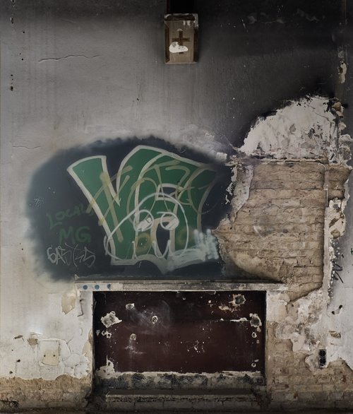
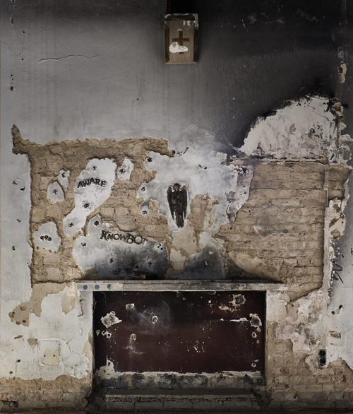
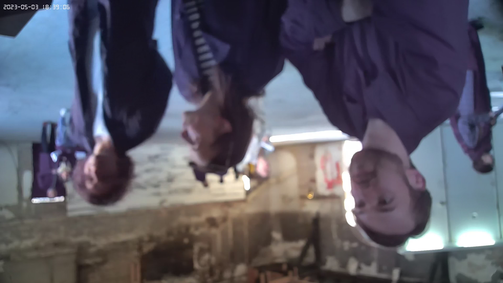
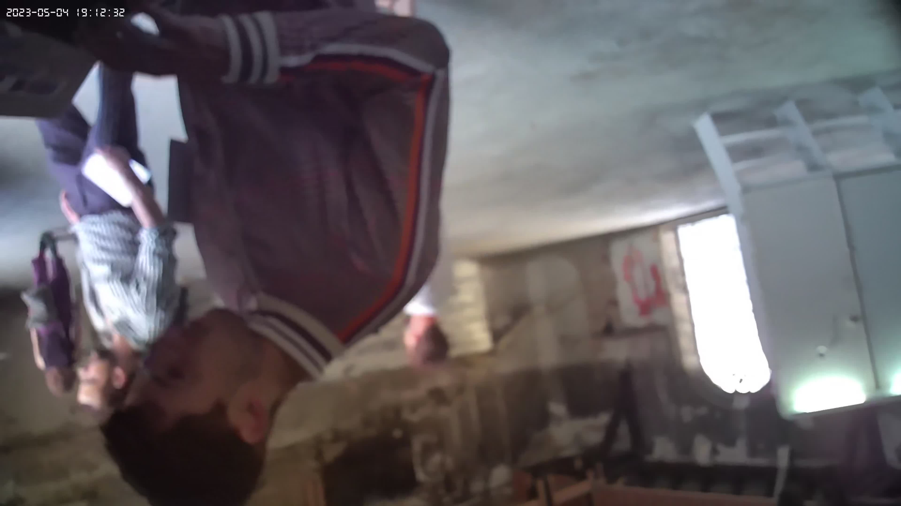

Big Brother
"Big Brother," a site-specific installation curated by Mara Sporn in 2023 at Düsseldorf's former prison chapel, "Ulmer Höhe," intricately blends reclaimed bronze, plaster, paint, carbon, a spy camera, a Bible, and a mini-printer.
The installation engages visitors through a covert video system in the wall, highlighting pervasive surveillance and transforming the act of being photographed into a commentary on constant observation. A strategically placed bronze angel symbolizes the link between religion and surveillance, emphasizing the transformation of religious motifs in the context of modern surveillance. In a parallel narrative, the installation fuses traditional and technological elements, unveiling Bible images through a hidden spy camera and mini-printer, symbolizing the evolution of narratives in the digital age. Words like "aware" and "knowbot" on the walls represent the coexistence of ancient wisdom and modern technology, prompting reflection on the evolving nature of communication. Overall, 'Big Brother' navigates the complexities of contemporary reality, exploring nuanced relationships between the sacred and technological while providing a captivating commentary on the multifaceted nature of surveillance in our interconnected world.